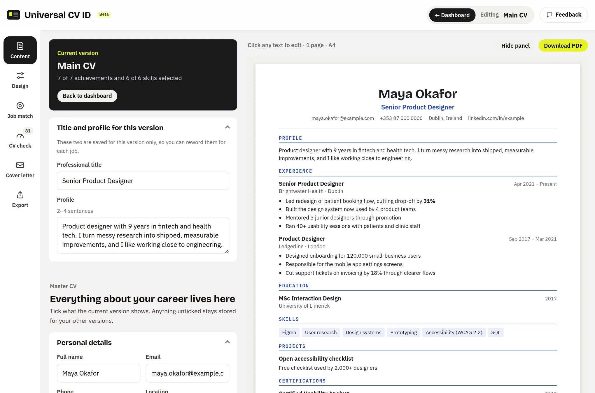
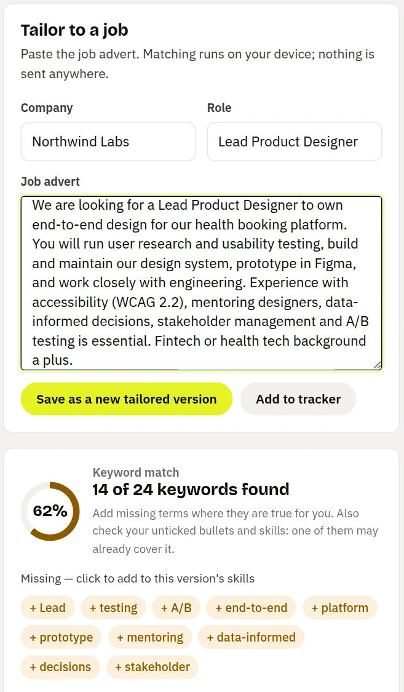
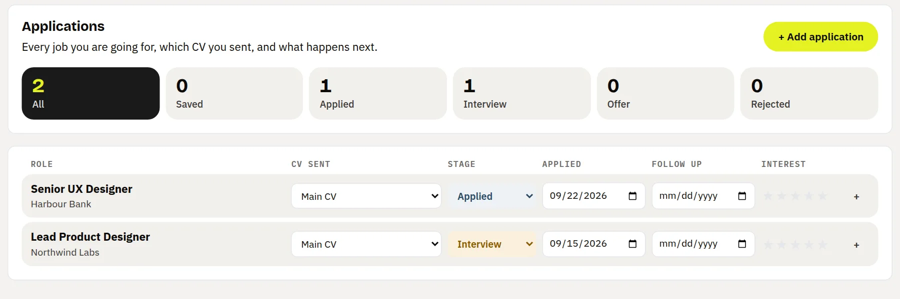
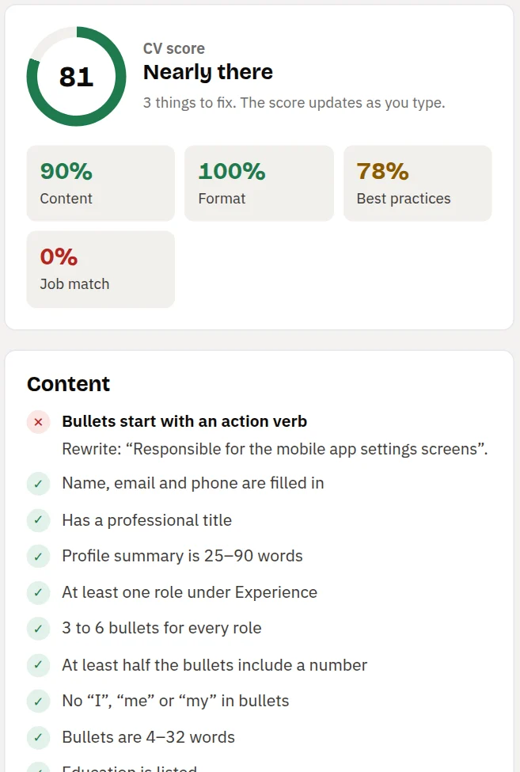

A free CV builder with no sign-up. Build your CV once, tailor it to every job, and always know which version went to which company.

Most people end up with a folder of near-identical files and no idea which one went where. We keep one master CV and build each version from it.
Paste the job advert and see which keywords your CV covers and which are missing. Save the result as a new version; your main CV stays as it is.

Log each job from saved to offer, with the CV version you sent, the date you applied and when to follow up.

Every check is a clear pass or fail with a fix: numbers in your bullets, weak openers, buzzwords, length and format.

The CV builder is free and works today. It is in beta, so you may meet the odd rough edge. Here is what we are building next.
Read the blog for the detail, or take the 2-minute survey to tell us what to build first.
Yes. Building, tailoring, downloading as PDF or Word, and tracking applications are all free. There is no trial and no paywall on downloads.
No. There is no sign-up, email or password. Your CV is saved in your own browser on your own device.
Yes. Upload a PDF or Word file and the builder fills in your sections, so you don't have to retype everything.
Mostly. In Ireland and the UK a CV is the standard document for job applications, usually one or two A4 pages. In the US a résumé is the shorter equivalent. The builder works for both.
Every template downloads as real, selectable text rather than an image, and there is a plain layout for screening software. Job match shows which keywords from the advert your CV covers and which are missing.
Paste the job advert into Job match, tick the roles, bullets and skills that fit, and save it as a new version. Your master CV stays untouched, and the tracker records which version went to which company.
Only in your browser. We do not receive a copy. It leaves your device only when you download it or share a link yourself.